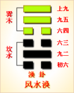

<!DOCTYPE html PUBLIC "-//W3C//DTD XHTML 1.0 Transitional//EN" "http://www.w3.org/TR/xhtml1/DTD/xhtml1-transitional.dtd">

<html xmlns="http://www.w3.org/1999/xhtml">
<head>
<meta content="text/html; charset=utf-8" http-equiv="Content-Type"/>
<title>周易第五十九卦：涣卦 风水�?巽上坎下原文解释翻译-周易-国学�?/title>
<meta content="周易,涣卦,风水�?巽上坎下" name="keywords"/>
<meta content="周易,涣卦,风水�?巽上坎下，周易第五十九卦：涣�?风水�?巽上坎下解释翻译�?（风水涣）巽上坎�?《涣》：亨。王假有庙。利涉大川，利贞�?初六，用拯马壮，吉�?九二，涣奔其机，悔亡�?六三，涣其躬，无悔�?六四，涣其群，元吉。涣有丘，匪夷所思�?�? name="description"/>
<link href="css.css" media="screen" rel="stylesheet" type="text/css"/>
</head>
<body>
<div class="gxlayout">
</div>
<div class="gxlayout">
<div class="ihead">
<div class="title"><a>周易</a></div>
<ul class="more fl">
<li>当前位置:<a>国学梦首�?/a> &gt; <a>国学经典</a> &gt; <a>经部</a> &gt; <a>四书五经</a> &gt; <a>周易</a> &gt;  周易第五十九卦：涣卦 风水�?巽上坎下原文解释翻译</li>
</ul>
</div>
<div class="gxbl fl">
<div class="latitle">

<h1>周易第五十九卦：涣卦 风水�?巽上坎下</h1>
<div class="lainfo"><span>作者：佚名</span> <span>全集�?a>周易</a></span> <span>来源：网�?/span> <span>[<a rel="nofollow" target="_blank">挑错/完善</a>]</span></div>
</div>
<div class="lacontent">
<div class="clearfix"></div>
<!--<!-- allowfullscreen="" frameborder="0" height="36" src="http://www.ximalaya.com/swf/sound/yellow.swf?id=1382850&amp;auto=true" width="260"></iframe>-->
<p style="text-align:center"></p>
<p style="text-align:center"><a>周易第五十九卦详�?/a></p>
<p style="text-align:center"><a>第五十九卦初六爻详解</a>　<a>第五十九卦九二爻详解</a>　<a>第五十九卦六三爻详解</a></p>
<p style="text-align:center"><a>第五十九卦六四爻详解</a>　<a>第五十九卦九五爻详解</a>　<a>第五十九卦上九爻详解</a></p>
<p><strong><a target="_blank">周易</a>第五十九�?�?风水�?巽上坎下</strong></p>
<p>涣：亨。王假有庙，利涉大川，利贞�?/p>
<p>彖曰：涣，亨。刚来而不穷，柔得位乎外而上同。王假有庙，王乃在中也。利涉大川，乘木有功也�?/p>
<p>象曰：风行水上，�?先王以享于帝立庙�?/p>
<p>初六：用拯马壮，吉。象曰：初六之吉，顺 也�?/p>
<p>九二：涣奔其机，悔亡。象曰：涣奔其机，得愿也�?/p>
<p>六三：涣其躬，无悔。象曰：涣其躬，志在外也�?/p>
<p>六四：涣其群，元吉。涣有丘，匪夷所思。象曰：涣其群，元吉;光大也�?/p>
<p>九五：涣汗其大号，涣王居，无咎。象曰：王居无咎，正位也�?/p>
<p>上九：涣其血，去逖出，无咎。象曰：涣其血，远害也�?/p>
<p><strong><a href="59_涣卦.html" target="_blank">涣卦</a>卦象，风水涣卦的象征意义</strong></p>
<p>涣卦，这个卦是异卦相叠，下卦为坎，上卦为巽。风在水上行，推波助澜，四方流溢。古人经过观察发现，如果地上有一坑水，这坑水在有风的天气比无风的天气干得快，所以意识到这是风把水给吹散了。当遇到坎水在下、巽风在上的卦体时，就自然想到了，风在上吹，风能把水吹得涣散，故坎下巽上这一卦被称为“涣”。然而，风把水吹散，又变成云气，为人们带�?a target="_blank">雨水</a>。所以，虽然涣是水流流散之意，象征组织和人心涣散，但是用积极的手段和方法克服，战胜弊端，就能挽救涣散，转危为安�?/p>
<p>涣卦位于<a href="58_兑卦.html" target="_blank">兑卦</a>之后，《序卦》之中这样解释道：“人在喜悦之后，心情就会涣散，所以接着要谈涣。�?/p>
<p>《象》中这样解释道：“风行水上，‘涣�?先王以享于帝立庙。”这里指出：涣的卦象是坎(�?下巽(�?上，为风行水上之表象，象征涣散、离散。先代君王为了收合归拢人心便祭祀天帝，修建庙宇�?/p>
<p>涣卦象征涣散，启示了如何拯救涣散的道理，属于下卦。《象》中这样来断此卦：隔河望见一锭金，欲取岸宽水又深，指望资财难到手，尽夜资财枉费心�?/p>
<p>【涣卦释义】此卦卦名为涣。《说文》中说：“涣，流散也。”本义是指水流分散。其引申义为涣散、离散。俗话说“天下没有不散的宴席”，快乐、喜悦的宴席结束了，人们就该渐渐散去，回到自己的家中。所以兑卦的后面是涣卦。这就是《序卦传》中所说的：“说而后散之，故受之以涣。涣者，离也。�?/p>
<p>涣卦�?a target="_blank">�?/a>：涣卦的卦画为三个阳爻三个阴爻，其排列顺序与下面�?a href="60_节卦.html" target="_blank">节卦</a>的卦画正好相反，涣卦与节卦互为覆卦�?/p>
<p>从卦象上分析，涣卦的上卦为巽为风，下卦为坎为水，风吹水散便是涣卦的卦象。这风是春风，春风吹在水面上，水中的残冰逐渐消融，这就是涣卦的大形象。另外，涣卦上卦的巽也代表木，下卦坎为水，木行水上，有行舟之象。远古人类发明了舟楫,于是离开故居，漂洋过海，流散到世界各地。如美洲的印第安人便是从我国流散过去的移民�?/p>
<p>关键词：周易,涣卦,风水�?巽上坎下</p>
<div class="clearfix"></div>
<div class="title"><div class="thot">解释翻译</div><span>[挑错/完善]</span></div><p><a href="59_涣卦.html" target="_blank">涣卦</a>：洪水到来，君王到宗庙祭祖祈祷。有利于渡过大江大河。吉利的占问�?/p>
<p>初六：洪水到来，因骑马逃避摔伤。吉利�?/p>
<p>九二：汹猛的洪水冲毁了屋基，悔恨极了�?/p>
<p>六三：洪水冲到身上，无灾无悔�?/p>
<p>六四：洪水冲向人群，人群跑得快，大吉大利。洪水冲向山丘，那情景平时难以想象�?/p>
<p>九五：洪水滔滔，人们奔走呼号。洪水涨到王宫，。结果没有灾难�?/p>
<p>上九：洪水的忧患消除了，但要提防灾难重现，就不会有灾祸�?/p>
<div class="title"><div class="thot">注释出处</div><span>[请记住我�?国学�?www.guoxuemeng.com]</span></div><p>①涣是本卦的标题。涣的意思是洪水。全卦的内容是讲水灾水患。标题的“涣”字与内容有关，又是卦中多见词�?/p>
<p>②亨：用作“享”，意思是�?祀�?/p>
<p>③用：因为。拯：用作“乘”。壮：用作“册’，意思是受伤�?/p>
<p>④奔：用作“崩”，意思是冲毁。机：用作“兀”，意思是房屋的地基�?/p>
<p>⑤群：众人�?/p>
<p>(6)有：于。丘：山丘�?/p>
<p>(7)匪：非。夷：平常�?/p>
<p>(8) 涣汗：水流盛大的样子。其：而。号：呼叫�?/p>
<p>(9)王居：王者的住处，王宫�?/p>
<p>(10)血：用作“恤”，意思是忧患。去：消除。逖：用作“惕”，意�?是警惕。出：产生�?/p>
<div class="clearfix"></div>
<div class="contextdhall clearfix">
<ul>
<li>上一篇：<a href="58_兑卦.html">周易第五十八卦：兑卦 兑为�?兑上兑下</a> </li>
<li>下一篇：<a href="60_节卦.html">周易第六十卦：节�?水泽�?坎上兑下</a> </li>
<li>全   文�?a>周易</a></li>
</ul>
</div>
</div>
<div class="clearfix mt20"></div>
</div>
</div>
<div class="clearfix mt20"></div>
<div class="gxlayout">
</div>
<script>
var _hmt = _hmt || [];
(function() {
  var hm = document.createElement("script");
  hm.src = "https://hm.baidu.com/hm.js?872034ded637616c5cf8e173a446bb0e";
  var s = document.getElementsByTagName("script")[0];
  s.parentNode.insertBefore(hm, s);
})();
</script>
</body>
</html>
